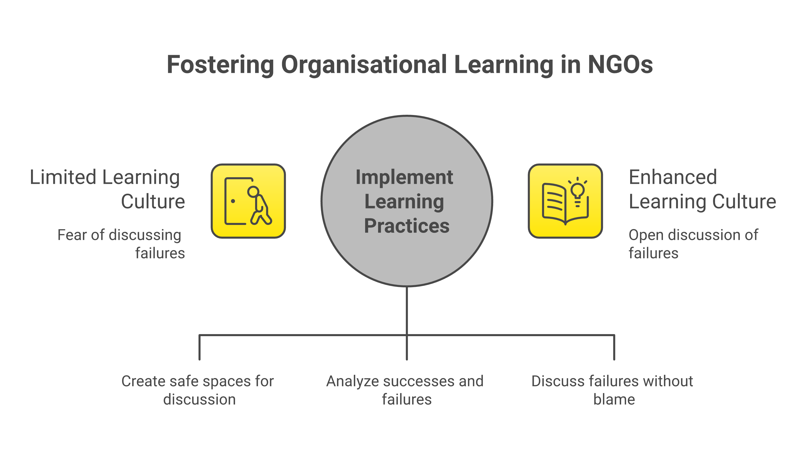
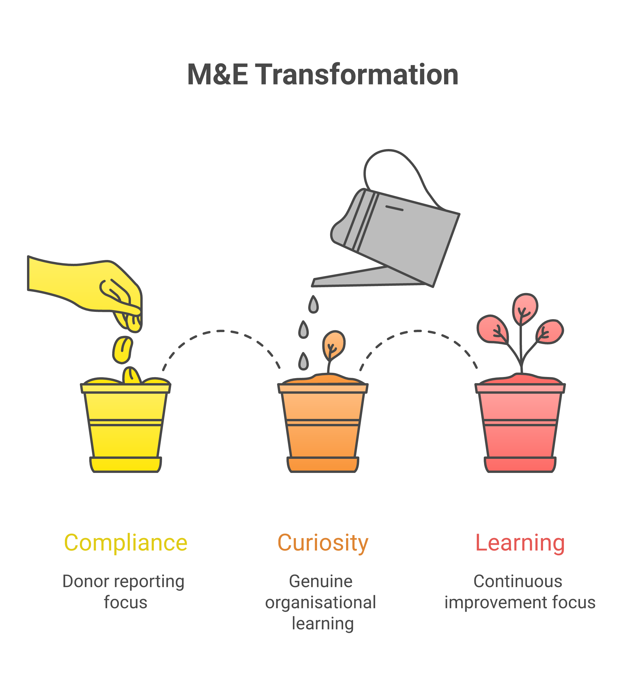

The Blame Trap
Ask in a development organisation what happens when a programme misses its targets, and the answer often involves some version of blame. The field team blames the community for low participation. The programme team blames the field team for poor implementation. The management blames the programme team for unrealistic planning. And the donors blame the management for poor results. Everyone is pointing fingers, and no one is learning.
Blame is common in every sector, and it costs more in development work, where interventions meet complex social systems and results are uncertain. Some failure comes with the territory. Yet most organisations treat it as something to hide, explain away or punish, and examine it too rarely. ALNAP's "Lessons of lessons" meta-analysis of about two decades of its Lessons Papers on humanitarian responses found that lessons about structural, system-wide problems changed little over time and stayed observational rather than instructional.
The costs add up. When staff fear punishment for honest reporting, data quality deteriorates. When programme managers hide negative findings, the organisation loses the feedback it needs to improve. When donors penalise failure and reward good news, organisations write favourable reports. Each group is responding to its incentives, and the sum is very little learning. As we explore in stories of evidence-based pivots, it takes real courage to follow uncomfortable evidence.

What Psychological Safety Looks Like
The concept of psychological safety, originally introduced by Edgar Schein and Warren Bennis in the 1960s and later developed by Harvard professor Amy Edmondson, describes an environment where people feel safe to take interpersonal risks: admitting mistakes, asking questions, offering dissenting opinions, and flagging problems without fear of punishment or humiliation. Edmondson's study of hospital teams produced a counterintuitive finding: the better-led units, with better relationships among staff, reported more errors. Edmondson read this as a sign that staff there felt safe enough to report mistakes, and that units with punitive managers reported fewer of them. In development organisations, that same safety is the foundation on which a learning culture must be built.
Psychological safety does not mean lowering standards or avoiding accountability. It means separating the judgment of the work from the judgment of the person. When a programme misses its outcomes, the first job is to find out why, before deciding who is to blame. A field officer who reports that beneficiaries are not engaging with the programme is giving the team useful information.
In practice, psychological safety shows up in a few behaviours. Leaders who model vulnerability by sharing their own mistakes and uncertainties. Team meetings where dissent is actively invited rather than merely tolerated. Performance reviews that assess learning and adaptation alongside target achievement. Reporting systems that ask "what did we learn?" alongside "what did we achieve?": framed around indicators that actually matter, not just vanity metrics.
"By hiding our failures, we are condemning ourselves to repeat them and we are stifling innovation.": Engineers Without Borders Canada, AdmittingFailure.com, quoted in its 2011 Failure Report
After-Action Reviews: A Practical Tool
A widely used tool for building a learning culture is the after-action review (AAR): a structured reflection process introduced by the US Army in the mid-1970s and since taken up by humanitarian and development organisations. This after-action review guidance from USAID's Bureau for Humanitarian Assistance, held in the ALNAP library, defines an AAR as an assessment that lets team members and leaders discover what happened and why, reassess direction and review both successes and challenges. In the Army version, as David Garvin describes it, discussion revolves around four questions: What did we set out to do? What actually happened? Why did it happen? What are we going to do next time? AARs are conducted after significant activities (programme launches, training events, emergency responses, evaluation exercises) while the experience is still fresh.
The power of AARs lies in their structure and regularity. Done well, they are routine and built into the organisation's workflow. A livelihoods programme might conduct an AAR after every market linkage event. A health programme might review every community health camp. An education programme might debrief after every teacher training cycle. Repeated often enough, they leave a written record of what the team has learned.
Four things tend to decide whether an AAR works: timeliness (conducting them within days of the event, while memories are fresh), inclusivity (involving all team members regardless of hierarchy), documentation (recording insights in a shared, searchable format), and follow-through (actually making the changes identified). An AAR that produces recommendations and no action gives staff a reason to see reflection as a formality.
Safe Spaces for Failure
A well-known precedent is Engineers Without Borders Canada, which from 2008 published an annual Failure Report in which its staff describe projects that went wrong. The 2011 edition covers a programme to build the capacity of farmers' organisations in Burkina Faso, and the 2010 edition describes a district water-monitoring system in Malawi that lapsed once NGO funding for data collection ended. EWB later launched a web portal, AdmittingFailure.com, to widen the conversation, and William Gates Sr. of the Gates Foundation called the initiative bold leadership in his foreword to the 2010 report. Development organisations in South Asia can make similar space for sharing failure, and participatory MEL approaches can help by giving communities a voice in defining what success and failure look like. One format teams can borrow is a regular session in which managers present their biggest failure of the quarter, what they learned and how they adapted.
Teams can also borrow "red team" exercises for major programme designs, where a designated group's role is to challenge assumptions, identify weaknesses, and argue for alternative approaches. These exercises surface potential failure points before implementation rather than after, and they normalise critical questioning as a constructive rather than adversarial practice.
A natural extension is the internal "failure library": a documented collection of programme components that did not work, with analysis of why and what was learned. Where organisations require new staff to read it during onboarding, and ask programme designers to check fresh proposals against documented failures, the library becomes a defence against repeating known mistakes, the pattern the AdmittingFailure site describes as one mistake recurring in Tanzania, then Ghana, then Mali.

The Leadership Imperative
Culture change starts at the top. No amount of AAR facilitation guides or learning frameworks will transform an organisation whose leaders punish honesty and reward spin. A development leader can set the tone by publicly sharing their own failures and what they learned from them. When a CEO tells the team, "I made a strategic error last quarter, here is what happened and what I learned," it sends an unmistakable signal that learning from failure is valued at the highest levels.
Donors matter too. Funding rules that ask only for success stories and rising indicators give staff a reason to hide setbacks. One institutional attempt to change this was USAID's Collaborating, Learning and Adapting (CLA) framework, a set of practices combining strategic collaboration, continuous learning and adaptive management. USAID's own case summary, published by the OECD, says that a growing body of evidence shows adaptive leadership and the open embrace of learning from failure improve an organisation's ability to learn and adapt. A related principle comes from Michael Quinn Patton, who has argued for decades through utilisation-focused evaluation, which holds that an evaluation should be judged by its utility and actual use by its intended users. ALNAP's guidance on evaluating humanitarian action lists drawing lessons to improve policy and practice, and enhancing accountability, as the reasons for doing an evaluation. A learning culture is what turns those lessons into action. Tools like the MEL Lab can help teams design learning-oriented frameworks from the outset.
For practitioners who want to ground this culture in solid method, our free MEL course, The Evidence Question, connects learning culture to the day-to-day craft of monitoring and evaluation.